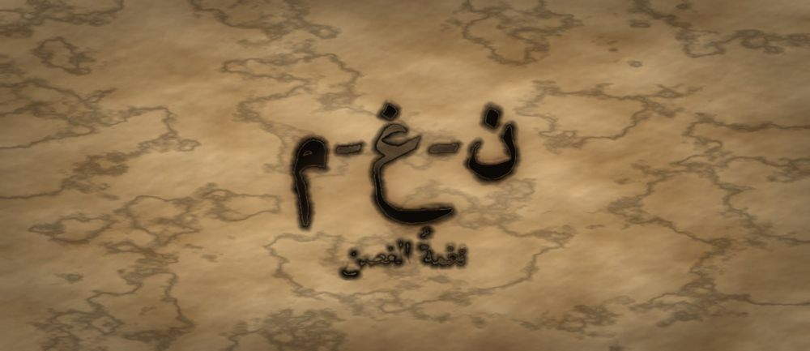

مَطبعةُ جُذور · دبي · MCMXXVI · سِلْسِلَةُ فَنِّ البَيان

مَرحلةُ الغُصْن · الفئة ١٠–١٢ · الجذر ن-غ-م · أبو الأسود الدؤلي
❦ ✦ ❧
السِّفْرُ ٨ — نغمةُ الغصن
«لَيْسَ الْمُهِمُّ مَا تَقُولُ فَقَطْ — بَلْ عَلَى أَيِّ نَغْمَةٍ تَقُولُهُ»

الرِّسَالَةُ الجَوْهَرِيَّة
الْجُمْلَةُ الْوَاحِدَةُ تَحْمِلُ عَشَرَةَ مَعَانٍ بِحَسَبِ نَغْمَتِهَا: تَسْأَلُ، أَوْ تُؤَكِّدُ، أَوْ تَسْخَرُ، أَوْ تَعْتَذِرُ. يَتَعَلَّمُ الْمُتَعَلِّمُ هُنَا أَنَّ صَوْتَهُ آلَةٌ لَهَا طَبَقَاتٌ، وَأَنَّ التَّحَكُّمَ فِي الِارْتِفَاعِ وَالِانْخِفَاضِ وَالْمَدِّ وَالْوَقْفِ هُوَ نِصْفُ الْمَعْنَى الَّذِي يَصِلُ إِلَى النَّاسِ.
بِطَاقَةُ هُوِيَّةِ السِّفْر
| الْمُسْتَوَى / الدَّرَجَة | غُصْنٌ يَتَشَكَّلُ — الدَّرَجَةُ الْأُولَى فِي مَرْحَلَةِ الْغُصْنِ |
| الْفِئَةُ الْعُمْرِيَّة | ١٠–١٢ سَنَةً · نِطَاقُ تَدَاخُلٍ يَمْتَدُّ إِلَى ١٣ لِمَنْ يَدْخُلُ الْمَرْحَلَةَ مُتَأَخِّرًا |
| الْجَذْرُ الْأَسَاسِيّ | ن – غ – م · النَّغَمُ: الْمَعْنَى الْمَحْمُولُ عَلَى ارْتِفَاعِ الصَّوْتِ وَانْخِفَاضِهِ |
| أُسْرَةُ الْجَذْر | نَغَم · نَغْمَة · أَنْغَام · تَنْغِيم · مُنَغَّم · نَغَّمَ |
| الْمَحَطَّة | التَّنْغِيمُ — الطَّبَقَةُ الثَّانِيَةُ مِنَ الْمَعْنَى فَوْقَ الْكَلِمَاتِ |
| الْمِرْسَاةُ الْحِسِّيَّة | تَحْرِيكُ الْيَدِ صُعُودًا وَهُبُوطًا مَعَ ارْتِفَاعِ النَّبْرَةِ وَانْخِفَاضِهَا — رَسْمُ الْمَوْجَةِ فِي الْهَوَاءِ |
| الِاسْتِعَارَة | الْغُصْنُ الَّذِي صَلُبَ عُودُهُ، يَتَعَلَّمُ أَنْ يَهْتَزَّ بِالرِّيحِ عَلَى دَرَجَاتٍ لَا عَلَى دَرَجَةٍ وَاحِدَةٍ |
| الشَّخْصِيَّتَانِ الْحَكِيمَتَان | أَبُو الْأَسْوَدِ الدُّؤَلِيُّ (وَاضِعُ النَّقْطِ الْأَوَّلِ) + الْجَدَّةُ رَمْلَة |
| الشَّخْصِيَّةُ الرَّمْزِيَّة | نُورُ الْغُصْنِ (نَفْسُهَا مِنَ الْأَسْفَارِ السَّابِقَةِ — تَنْمُو) |
| الشَّخْصِيَّةُ الْمُضَادَّة | النَّسِيمُ الرَّتِيبُ — رَمْزِيٌّ لَا تَارِيخِيٌّ، يَهُبُّ عَلَى دَرَجَةٍ وَاحِدَةٍ لَا تَتَغَيَّرُ، ثُمَّ يَتَعَلَّمُ الصُّعُودَ وَالْهُبُوطَ |
| مُؤَشِّرُ الرَّصْدِ الْوَصْفِيّ | يُلَاحَظُ أَنَّهُ يُغَيِّرُ نَبْرَتَهُ عَمْدًا لِيُغَيِّرَ الْمَعْنَى، وَيُسَمِّي مَا فَعَلَهُ |
| الْمَجَالُ الْمَهَارِيّ | إِدَارَةُ الذَّاتِ وَالتَّعْبِيرُ — ضَبْطُ أَدَاةِ الصَّوْتِ |
| الْمَرْجِعُ النَّظَرِيّ | اسْتِرْشَادًا بِـ TRT — نَظَرِيَّةِ الْقِرَاءَةِ الْمَلْمُوسَةِ (لَا ادِّعَاءَ اعْتِمَادٍ) |
صَاحِبُ السِّفْرِ مِنَ التُّرَاث
أَبُو الْأَسْوَدِ الدُّؤَلِيُّ (ت نَحْوَ ٦٩هـ) تَابِعِيٌّ وَشَاعِرٌ بَصْرِيٌّ، يُنْسَبُ إِلَيْهِ وَضْعُ نَقْطِ الْإِعْرَابِ عَلَى الْحُرُوفِ صَوْنًا لِلْقِرَاءَةِ مِنَ اللَّحْنِ، وَتُنْسَبُ إِلَيْهِ بَوَاكِيرُ النَّحْوِ الْعَرَبِيِّ. نَسْتَلْهِمُ مِنْهُ هُنَا: أَنَّ حَرَكَةً صَغِيرَةً فَوْقَ الْحَرْفِ قَدْ تَقْلِبُ الْمَعْنَى كُلَّهُ، كَمَا تَقْلِبُهُ نَبْرَةٌ صَغِيرَةٌ فَوْقَ الْجُمْلَةِ.
الشَّخْصِيَّةُ المُضَادَّة — النَّسِيمُ الرَّتِيبُ — شَخْصِيَّةٌ رَمْزِيَّةٌ لَا تَارِيخِيَّةٌ، يَهُبُّ لَيْلًا وَنَهَارًا عَلَى دَرَجَةٍ وَاحِدَةٍ لَا تَعْلُو وَلَا تَنْخَفِضُ، فَيَنَامُ مَنْ يَسْمَعُهُ. يَعْتَقِدُ أَنَّ الثَّبَاتَ وَقَارٌ، ثُمَّ يَكْتَشِفُ أَنَّ الرَّتَابَةَ تَقْتُلُ الْمَعْنَى، فَيَتَعَلَّمُ أَنْ يَصْعَدَ وَيَهْبِطَ وَيَقِفَ.
الجَذْرُ وَأُسْرَتُه
ن-غ-م — نَغَم · نَغْمَة · أَنْغَام · تَنْغِيم · مُنَغَّم · نَغَّمَ
الْجَذْرُ (ن-غ-م) صَحِيحٌ سَالِمٌ، وَ«النَّغَمُ» اسْمُ جِنْسٍ جَمْعِيٌّ وَاحِدَتُهُ «نَغْمَة» بِتَاءِ الْوَحْدَةِ، وَجَمْعُهُ «أَنْغَام» عَلَى وَزْنِ أَفْعَال. وَ«تَنْغِيم» مَصْدَرُ الْمُضَعَّفِ «نَغَّمَ» عَلَى وَزْنِ تَفْعِيل، وَهُوَ الْمُصْطَلَحُ الْمُسْتَعْمَلُ فِي الدَّرْسِ الصَّوْتِيِّ الْحَدِيثِ لِلدَّلَالَةِ عَلَى مُوسِيقَى الْجُمْلَةِ لَا مُوسِيقَى الْحَرْفِ.
القِصَّةُ الكَامِلَة
الْمَشْهَدُ ١ — جُمْلَةٌ وَاحِدَةٌ تُفْهَمُ خَطَأً
صَارَتْ نُورُ غُصْنًا الْآنَ، لَهَا طُولٌ وَأَوْرَاقٌ وَظِلٌّ صَغِيرٌ يَجْلِسُ فِيهِ النَّمْلُ. وَفِي يَوْمٍ، جَاءَهَا صَدِيقُهَا الْغُصْنُ الْمُجَاوِرُ يَعْرِضُ عَلَيْهَا وَرَقَةً رَسَمَ فِيهَا شَكْلًا وَقَالَ: «انْظُرِي، أَتُعْجِبُكِ؟» كَانَتْ نُورُ مَشْغُولَةً، فَقَالَتْ عَلَى عَجَلٍ وَبِنَبْرَةٍ مُسَطَّحَةٍ هَابِطَةٍ: «جَمِيلٌ.» فَانْطَفَأَ وَجْهُ صَدِيقِهَا وَطَوَى وَرَقَتَهُ وَمَضَى. تَعَجَّبَتْ نُورُ وَقَالَتْ: «لَكِنِّي مَدَحْتُهُ! قُلْتُ: جَمِيلٌ!» ثُمَّ أَعَادَتِ الْكَلِمَةَ فِي رَأْسِهَا بِالطَّرِيقَةِ الَّتِي قَالَتْهَا... فَسَمِعَتْهَا هَذِهِ الْمَرَّةَ بِأُذُنِ صَدِيقِهَا، فَإِذَا هِيَ لَا تَعْنِي الْمَدْحَ أَبَدًا، بَلْ تَعْنِي: «لَا يُهِمُّنِي.» وَقَالَتْ فِي دَهْشَةٍ: «الْكَلِمَةُ نَفْسُهَا... وَالْمَعْنَى انْقَلَبَ!» وَجَلَسَتْ تُرَاجِعُ كَلِمَاتِهَا كُلَّهَا فِي ذَلِكَ الْيَوْمِ، فَوَجَدَتْ أَنَّ بَعْضَهَا خَرَجَ عَلَى غَيْرِ مَا أَرَادَتْ. وَقَالَتْ لِنَفْسِهَا: «تَعَلَّمْتُ أَنْ أُرَتِّبَ كَلَامِي، وَلَمْ أَتَعَلَّمْ بَعْدُ أَنْ أَضْبِطَ صَوْتَهُ. يَبْدُو أَنَّ لِلْكَلِمَةِ لِبَاسًا، وَأَنَا أُلْبِسُهَا مِنْ غَيْرِ أَنْ أَنْتَبِهَ.»
الْمَشْهَدُ ٢ — النَّسِيمُ الرَّتِيبُ يُقْنِعُهَا بِأَنَّ التَّسْطِيحَ وَقَارٌ
مَرَّ عَلَيْهَا النَّسِيمُ الرَّتِيبُ يَهُبُّ عَلَى دَرَجَةٍ وَاحِدَةٍ: هووووو... هووووو... لَا يَعْلُو وَلَا يَنْخَفِضُ وَلَا يَقِفُ. قَالَ لَهَا بِصَوْتٍ مُسْتَوٍ تَمَامًا: «لَا تَشْغَلِي بَالَكِ. أَنَا أَهُبُّ هَكَذَا مُنْذُ أَلْفِ عَامٍ. الصَّوْتُ الْمُسْتَقِيمُ وَقُورٌ، وَالَّذِي يَصْعَدُ وَيَهْبِطُ صَوْتٌ غَيْرُ جَادٍّ.» أَنْصَتَتْ نُورُ إِلَيْهِ — وَكَانَتْ قَدْ تَعَلَّمَتِ الْإِنْصَاتَ مُنْذُ الْبُرْعُمِ — فَلَاحَظَتْ شَيْئًا غَرِيبًا: بَعْدَ لَحْظَاتٍ لَمْ تَعُدْ تَسْمَعُهُ. لَمْ يَتَوَقَّفْ عَنِ الْكَلَامِ، لَكِنَّ أُذُنَهَا تَوَقَّفَتْ عَنِ الِالْتِقَاطِ. وَنَظَرَتْ حَوْلَهَا فَرَأَتِ النَّمْلَ نَائِمًا، وَالْأَوْرَاقَ سَاكِنَةً، وَالْحَدِيقَةَ كُلَّهَا كَأَنَّهَا فِي غُرْفَةٍ مُغْلَقَةٍ. وَقَالَتْ نُورُ فِي نَفْسِهَا: «إِذَا كَانَ الثَّبَاتُ وَقَارًا، فَلِمَاذَا لَا يَسْمَعُهُ أَحَدٌ؟» ثُمَّ جَرَّبَتْ أَنْ تَقُولَ جُمْلَةً كَامِلَةً عَلَى دَرَجَةٍ وَاحِدَةٍ مِثْلَهُ، فَشَعَرَتْ أَنَّ فَمَهَا يَتْعَبُ وَأَنَّ الْمَعْنَى يَخْرُجُ نَاقِصًا كَأَنَّهُ طَعَامٌ بِلَا مِلْحٍ.
الْمَشْهَدُ ٣ — أَبُو الْأَسْوَدِ وَالْجَدَّةُ رَمْلَةُ وَالنُّقْطَةُ الَّتِي تَقْلِبُ الْمَعْنَى
جَاءَتِ الْجَدَّةُ رَمْلَةُ وَمَعَهَا شَيْخٌ نَحِيفٌ حَادُّ النَّظَرِ هُوَ أَبُو الْأَسْوَدِ الدُّؤَلِيُّ، وَفِي يَدِهِ قَلَمٌ وَمِدَادٌ. قَالَ: «سَمِعْتُ ذَاتَ يَوْمٍ رَجُلًا يَقْرَأُ فَيُخْطِئُ فِي حَرَكَةٍ وَاحِدَةٍ، فَيَنْقَلِبُ الْمَعْنَى رَأْسًا عَلَى عَقِبٍ. فَوَضَعْتُ نُقَطًا فَوْقَ الْحُرُوفِ لِتَحْفَظَ الْمَعْنَى.» ثُمَّ قَالَ لِنُورَ: «وَأَنْتِ الْآنَ أَمَامَ نُقْطَةٍ أُخْرَى: نُقْطَةٍ لَا تُكْتَبُ، تُوضَعُ بِالصَّوْتِ.» قَالَتِ الْجَدَّةُ رَمْلَةُ: «جَرِّبِي. قُولِي كَلِمَةَ (جَمِيلٌ) ثَلَاثَ مَرَّاتٍ: مَرَّةً وَصَوْتُكِ يَصْعَدُ فِي آخِرِهَا، وَمَرَّةً وَهُوَ يَهْبِطُ سَرِيعًا، وَمَرَّةً وَأَنْتِ تَمُدِّينَهَا وَتَقِفِينَ بَعْدَهَا.» فَعَلَتْ نُورُ، ثُمَّ صَمَتَتْ مَذْهُولَةً وَقَالَتْ: «ثَلَاثُ كَلِمَاتٍ مُخْتَلِفَةٍ... مِنْ كَلِمَةٍ وَاحِدَةٍ!» ثُمَّ قَالَ أَبُو الْأَسْوَدِ: «الْحَرَكَةُ الصَّغِيرَةُ فَوْقَ الْحَرْفِ تُنْقِذُ الْجُمْلَةَ، وَالنَّبْرَةُ الصَّغِيرَةُ فَوْقَ الْجُمْلَةِ تُنْقِذُ الْقَلْبَ.» وَأَعَادَتْ نُورُ التَّجْرِبَةَ ثَلَاثَ مَرَّاتٍ أُخْرَى وَهِيَ تُصْغِي إِلَى نَفْسِهَا كَمَا تُصْغِي إِلَى غَيْرِهَا.
الْمَشْهَدُ ٤ — نُورُ تَرْسُمُ الْمَوْجَةَ بِيَدِهَا
قَالَتِ الْجَدَّةُ رَمْلَةُ: «لِتُمْسِكِي النَّغْمَةَ، اجْعَلِيهَا مَرْئِيَّةً. ارْفَعِي يَدَكِ فِي الْهَوَاءِ مَعَ صُعُودِ صَوْتِكِ، وَاخْفِضِيهَا مَعَ هُبُوطِهِ.» رَفَعَتْ نُورُ كَفَّهَا وَقَالَتْ: «أَحَقًّا؟» فَصَعِدَتْ يَدُهَا وَصَعِدَ صَوْتُهَا مَعًا. ثُمَّ قَالَتْ: «حَسَنًا.» فَهَبَطَتِ الْيَدُ وَاسْتَقَرَّ الصَّوْتُ. ثُمَّ جَرَّبَتْ جُمْلَةً كَامِلَةً: «مَا أَجْمَلَ رَسْمَكَ» — مَرَّةً وَالْيَدُ تَصْعَدُ فِي «أَجْمَلَ» فَخَرَجَتِ الْجُمْلَةُ فَرِحَةً، وَمَرَّةً وَالْيَدُ مُسْتَوِيَةٌ لَا تَتَحَرَّكُ فَخَرَجَتْ بَارِدَةً. قَالَ أَبُو الْأَسْوَدِ: «هَذِهِ يَدُكِ تَكْتُبُ فِي الْهَوَاءِ مَا كُنْتُ أَكْتُبُهُ بِالْمِدَادِ.» وَتَعَلَّمَتْ نُورُ أَنَّ النَّبْرَةَ لَيْسَتْ زِينَةً فَوْقَ الْكَلَامِ، بَلْ هِيَ نِصْفُ الرِّسَالَةِ. ثُمَّ جَرَّبَتْ شَيْئًا آخَرَ: سَكَتَتْ لَحْظَةً قَبْلَ كَلِمَةِ «أَجْمَلَ»، فَإِذَا الْجُمْلَةُ تَشْتَدُّ وَتَثْبُتُ. قَالَتِ الْجَدَّةُ رَمْلَةُ: «وَالصَّمْتُ نَغْمَةٌ أَيْضًا يَا نُورُ، بَلْ هُوَ أَقْوَى النَّغَمَاتِ حِينَ يَقَعُ فِي مَوْضِعِهِ.»
الْمَشْهَدُ ٥ — نُورُ تُعِيدُ الْجُمْلَةَ إِلَى صَاحِبِهَا
ذَهَبَتْ نُورُ إِلَى صَدِيقِهَا الَّذِي طَوَى وَرَقَتَهُ وَمَضَى. قَالَتْ لَهُ: «هَلْ تَسْمَحُ أَنْ أُعِيدَ كَلِمَتِي؟ قُلْتُهَا أَمْسِ بِنَغْمَةٍ لَمْ أَقْصِدْهَا.» فَتَحَ وَرَقَتَهُ عَلَى مَضَضٍ. نَظَرَتْ نُورُ إِلَى الرَّسْمِ نَظْرَةً حَقِيقِيَّةً هَذِهِ الْمَرَّةَ — وَكَانَتْ قَدْ تَعَلَّمَتِ النَّظَرَ فِي أَيَّامِ الْبَذْرَةِ — ثُمَّ رَفَعَتْ صَوْتَهَا فِي الْمَوْضِعِ الصَّحِيحِ وَقَالَتْ: «جَمِيــلٌ! خُصُوصًا هَذَا الْخَطُّ هُنَا، كَيْفَ خَطَرَ لَكَ؟» فَارْتَفَعَ وَجْهُهُ كَمَا تَرْتَفِعُ وَرَقَةٌ عَطْشَى بَعْدَ مَطَرٍ، وَقَالَ: «هَذِهِ الْمَرَّةَ سَمِعْتُ الْكَلِمَةَ حَقًّا.» قَالَتْ نُورُ فِي نَفْسِهَا: «الْكَلِمَةُ نَفْسُهَا وَالْحُرُوفُ نَفْسُهَا... وَلَكِنَّ الطَّرِيقَ إِلَى الْقَلْبِ كَانَ فِي النَّغْمَةِ.» ثُمَّ جَلَسَا يَتَحَدَّثَانِ عَنِ الرَّسْمِ طَوِيلًا، وَكَانَ يَشْرَحُ وَهِيَ تُنْصِتُ. وَفِي طَرِيقِ الْعَوْدَةِ قَالَتْ لِنَفْسِهَا: «الِاعْتِذَارُ لَا يَحْتَاجُ دَائِمًا إِلَى كَلِمَةِ آسِفٍ؛ أَحْيَانًا يَحْتَاجُ إِلَى أَنْ نُعِيدَ الْجُمْلَةَ نَفْسَهَا بِنَبْرَةٍ صَادِقَةٍ.»
الْمَشْهَدُ ٦ — النَّسِيمُ الرَّتِيبُ يَتَعَلَّمُ الصُّعُودَ وَالْوَقْفَ
عَادَ النَّسِيمُ الرَّتِيبُ وَهُوَ يَهُبُّ عَلَى دَرَجَتِهِ الْوَاحِدَةِ، لَكِنَّهُ سَأَلَ هَذِهِ الْمَرَّةَ: «لِمَاذَا يُصْغُونَ إِلَيْكِ وَيَنَامُونَ عِنْدَ صَوْتِي؟» قَالَتْ نُورُ بِلُطْفٍ: «لِأَنَّ الْأُذُنَ تَنْتَبِهُ لِلتَّغَيُّرِ لَا لِلثَّبَاتِ. جَرِّبْ أَنْ تَصْعَدَ قَلِيلًا، ثُمَّ تَهْبِطَ، ثُمَّ تَسْكُتَ لَحْظَةً.» تَرَدَّدَ النَّسِيمُ، ثُمَّ هَبَّ صَاعِدًا فَاهْتَزَّتِ الْأَوْرَاقُ الْعُلْيَا، ثُمَّ هَبَطَ فَتَمَايَلَ الْعُشْبُ، ثُمَّ سَكَتَ لَحْظَةً وَاحِدَةً. وَفِي تِلْكَ اللَّحْظَةِ الصَّامِتَةِ، اسْتَيْقَظَ النَّمْلُ وَرَفَعَتِ الْأَغْصَانُ رُؤُوسَهَا تَسْأَلُ: «مَاذَا جَرَى؟» ضَحِكَ النَّسِيمُ فَرِحًا وَقَالَ: «سَمِعُونِي أَخِيرًا! لَيْسَ لِأَنِّي عَلَوْتُ، بَلْ لِأَنِّي تَغَيَّرْتُ... وَلِأَنِّي سَكَتُّ.» وَمَنْ يَوْمِهَا صَارَ النَّسِيمُ يَهُبُّ عَلَى دَرَجَاتٍ: يَصْعَدُ عِنْدَ الْأَغْصَانِ الْعَالِيَةِ، وَيَهْبِطُ عِنْدَ الْعُشْبِ، وَيَقِفُ لَحْظَةً بَيْنَ الْجُمْلَتَيْنِ. وَقَالَتْ نُورُ: «هَكَذَا صِرْتَ تُقَالُ وَتُسْمَعُ، لَا تُقَالُ فَقَطْ.»
النُّسْخَةُ المُخْتَصَرَة
قَالَتْ نُورُ لِصَدِيقِهَا عَنْ رَسْمِهِ: «جَمِيلٌ» بِنَبْرَةٍ بَارِدَةٍ، فَطَوَى وَرَقَتَهُ وَمَضَى حَزِينًا. تَعَجَّبَتْ: الْكَلِمَةُ مَدْحٌ، فَكَيْفَ وَصَلَتْ إِهْمَالًا؟ مَرَّ النَّسِيمُ الرَّتِيبُ يَهُبُّ عَلَى دَرَجَةٍ وَاحِدَةٍ وَقَالَ: «الصَّوْتُ الْمُسْتَقِيمُ وَقُورٌ»، فَنَامَ مَنْ حَوْلَهُ. جَاءَ أَبُو الْأَسْوَدِ الدُّؤَلِيُّ فَقَالَ: «نُقْطَةٌ وَاحِدَةٌ تَقْلِبُ الْمَعْنَى، وَلِلصَّوْتِ نُقَطٌ أَيْضًا.» فَعَلَّمَتْهَا الْجَدَّةُ رَمْلَةُ أَنْ تَرْفَعَ يَدَهَا مَعَ صُعُودِ نَبْرَتِهَا وَتَخْفِضَهَا مَعَ هُبُوطِهَا. فَعَادَتْ نُورُ إِلَى صَدِيقِهَا وَقَالَتْ: «جَمِيــلٌ! كَيْفَ خَطَرَ لَكَ هَذَا الْخَطُّ؟» فَأَشْرَقَ وَجْهُهُ. وَجَرَّبَ النَّسِيمُ أَنْ يَصْعَدَ وَيَهْبِطَ وَيَسْكُتَ، فَأَصْغَتْ لَهُ الْحَدِيقَةُ لِأَوَّلِ مَرَّةٍ. وَقَالَتِ الْجَدَّةُ رَمْلَةُ: «الْكَلِمَاتُ بَيْتٌ، وَالنَّغْمَةُ نَافِذَتُهُ؛ فَإِنْ أُغْلِقَتِ النَّافِذَةُ خَنَقَ الْبَيْتُ سَاكِنَهُ.» وَصَارَتْ نُورُ قَبْلَ أَنْ تَتَكَلَّمَ تَرْسُمُ بِيَدِهَا خَطَّ صَوْتِهَا فِي الْهَوَاءِ: يَصْعَدُ حَيْثُ الْفَرَحُ، وَيَهْبِطُ حَيْثُ الطُّمَأْنِينَةُ، وَيَقِفُ لَحْظَةً قَبْلَ الْكَلِمَةِ الَّتِي تُحِبُّ أَنْ تَصِلَ. وَعَرَفَتْ نُورُ أَنَّ الْمَعْنَى يَرْكَبُ النَّبْرَةَ كَمَا يَرْكَبُ الْمَاءُ الْمَجْرَى.
المِرْسَاةُ الحِسِّيَّة
يَرْسُمُ الْمُتَعَلِّمُ بِيَدِهِ خَطَّ صَوْتِهِ فِي الْهَوَاءِ وَهُوَ يَتَكَلَّمُ: تَصْعَدُ الْكَفُّ حِينَ تَصْعَدُ النَّبْرَةُ، وَتَهْبِطُ حِينَ تَهْبِطُ، وَتَتَوَقَّفُ سَاكِنَةً عِنْدَ الْوَقْفَةِ. ثُمَّ يَضَعُ كَفَّهُ عَلَى صَدْرِهِ لِيَشْعُرَ بِاخْتِلَافِ الِاهْتِزَازِ بَيْنَ الطَّبَقَةِ الْعَالِيَةِ وَالْمُنْخَفِضَةِ. كُلُّ حَرَكَةٍ يُؤَدِّيهَا بِنَفْسِهِ، وَلَا تُوَجَّهُ يَدُهُ مِنْ أَحَدٍ.
العَنَاصِرُ الخَمْسَةُ لِلتَّطْبِيق
| الْمُخْرَجُ اللُّغَوِيّ | يَقُولُ الْمُتَعَلِّمُ جُمْلَةً وَاحِدَةً بِثَلَاثِ نَغَمَاتٍ («جَمِيلٌ» سُؤَالًا، وَتَأْكِيدًا، وَبُرُودًا)، ثُمَّ يُسَمِّي الْمَعْنَى الَّذِي أَنْتَجَتْهُ كُلُّ نَغْمَةٍ بِكَلِمَةٍ وَاحِدَةٍ. |
| الْحَرَكَةُ الْجَسَدِيَّة | يَرْسُمُ بِيَدِهِ فِي الْهَوَاءِ خَطَّ النَّبْرَةِ: صُعُودًا مَعَ الِارْتِفَاعِ، وَهُبُوطًا مَعَ الِانْخِفَاضِ، وَخَطًّا مُسْتَقِيمًا مَعَ الرَّتَابَةِ. كُلُّ الْحَرَكَةِ مِنْهُ هُوَ. |
| الدِّفْءُ الْعِلَائِقِيّ | يَقْرَأُ مُتَعَلِّمَانِ الْجُمْلَةَ نَفْسَهَا بِنَغْمَتَيْنِ مُخْتَلِفَتَيْنِ، وَيَذْكُرُ كُلٌّ مِنْهُمَا مَا شَعَرَ بِهِ وَهُوَ يَسْمَعُ — دُونَ حُكْمٍ عَلَى الْأَدَاءِ. |
| الْبَدِيلُ الْحِسِّيّ | لِمَنْ لَا يُرِيدُ إِخْرَاجَ صَوْتٍ: يَرْسُمُ خُطُوطَ التَّنْغِيمِ عَلَى وَرَقَةٍ فَوْقَ الْجُمْلَةِ الْمَكْتُوبَةِ، أَوْ يَتَتَبَّعُ خَيْطًا مَشْدُودًا صَاعِدًا وَهَابِطًا بِأُصْبُعِهِ. |
| الْجِسْرُ الْإِنْجِلِيزِيّ | «Same words, different tune, different meaning.» — تُقَالُ بَعْدَ الْعَرَبِيَّةِ لِيَتَنَبَّهَ الْمُتَعَلِّمُ أَنَّ التَّنْغِيمَ ظَاهِرَةٌ فِي اللِّسَانَيْنِ مَعًا. |
دَلِيلُ الأَهْلِ وَالمُعَلِّم
| قبل الجلسة | ضَعُوا الْأَجْهِزَةَ فِي صُنْدُوقٍ مُغْلَقٍ، وَاخْتَارُوا جُمْلَةً وَاحِدَةً قَصِيرَةً سَتَلْعَبُونَ بِهَا («جَمِيلٌ» أَوْ «حَسَنًا» أَوِ «انْتَهَيْتُ»). وَاتَّفِقُوا أَنَّ الْهَدَفَ اللَّعِبُ بِالْمَعْنَى لَا تَقْيِيمُ الصَّوْتِ. |
| أثناء الجلسة | لَا تَقُولُوا «صَوْتُكَ غَيْرُ صَحِيحٍ»؛ قُولُوا: «مَاذَا فَهِمْتُ أَنَا مِنْ نَبْرَتِكَ؟» ثُمَّ اتْرُكُوهُ يُقَرِّرُ هَلْ وَصَلَ مَا أَرَادَ أَمْ لَا. لَا تُقَارِنُوا أَدَاءَهُ بِأَحَدٍ. |
| بعد الجلسة | الْعَبُوا فِي الْأُسْبُوعِ لُعْبَةَ «مَا الَّذِي قَصَدَهُ؟»: يَقُولُ أَحَدُكُمْ جُمْلَةً بِنَغْمَةٍ، وَيُخَمِّنُ الْبَاقُونَ الْمَعْنَى. سَجِّلُوا فِي دَفْتَرٍ جُمْلَةً وَاحِدَةً غَيَّرَتْ نَبْرَتُهَا مَوْقِفًا حَقِيقِيًّا فِي الْبَيْتِ. |
مُؤَشِّرَاتُ الرَّصْدِ الوَصْفِيَّة
| ما تُلاحِظُه | ماذا يعني |
|---|---|
| يُعِيدُ جُمْلَتَهُ بِنَبْرَةٍ أُخْرَى حِينَ يَرَى أَنَّ الْمَعْنَى لَمْ يَصِلْ | مُؤَشِّرٌ وَصْفِيٌّ عَلَى وَعْيٍ نَاشِئٍ بِأَنَّ النَّبْرَةَ أَدَاةٌ فِي يَدِهِ — يُرْصَدُ وَلَا يُقَاسُ بِدَرَجَةٍ. |
| يُسَمِّي أَثَرَ النَّبْرَةِ بِكَلِمَةٍ («بَدَتْ سَاخِرَةً»، «بَدَتْ بَارِدَةً») | يَدُلُّ عَلَى أَنَّ الظَّاهِرَةَ صَارَتْ لُغَةً وَاعِيَةً عِنْدَهُ لَا شُعُورًا غَامِضًا. |
| يَسْتَعْمِلُ الْوَقْفَةَ الصَّامِتَةَ قَبْلَ كَلِمَةٍ مُهِمَّةٍ | إِشَارَةٌ إِلَى تَحَكُّمٍ نَاشِئٍ فِي الْإِيقَاعِ لَا إِلَى تَرَدُّدٍ؛ تُوصَفُ الْحَالَةُ كَمَا وَقَعَتْ. |
| يُلَاحِظُ نَبْرَاتِ الْآخَرِينَ وَيَسْأَلُ عَنْ مَقْصِدِهِمْ | بِدَايَةُ نَقْلِ الْمَهَارَةِ مِنَ الْإِنْتَاجِ إِلَى الْفَهْمِ؛ تُسَجَّلُ الْأَمْثِلَةُ بِكَلِمَاتِهِ هُوَ. |
مُفْرَدَاتُ السِّفْر
| الكلمة | المعنى |
|---|---|
| نَغْمَةٌ | طَرِيقَةُ صُعُودِ الصَّوْتِ وَهُبُوطِهِ فِي الْجُمْلَةِ |
| تَنْغِيمٌ | أَنْ أُغَيِّرَ نَبْرَتِي عَمْدًا لِأُغَيِّرَ الْمَعْنَى |
| رَتَابَةٌ | صَوْتٌ لَا يَتَغَيَّرُ فَتَمَلُّ الْأُذُنُ سَمَاعَهُ |
| طَبَقَةٌ | دَرَجَةُ عُلُوِّ الصَّوْتِ أَوِ انْخِفَاضِهِ |
| وَقْفَةٌ | صَمْتٌ قَصِيرٌ مَقْصُودٌ يُبْرِزُ مَا بَعْدَهُ |
| مَدٌّ | إِطَالَةُ الصَّوْتِ فِي حَرْفٍ لِإِضَافَةِ مَعْنًى |
الجِسْرُ الإِنْجْلِيزِيّ
| عربي | English |
|---|---|
| نَغْمَةٌ | tone |
| تَنْغِيمٌ | intonation |
| رَتَابَةٌ | monotony |
| طَبَقَةٌ | pitch |
| وَقْفَةٌ | pause |
| الْكَلِمَاتُ نَفْسُهَا، وَالْمَعْنَى مُخْتَلِفٌ | Same words, different meaning |
أَسْئِلَةُ الفَهْم
- مَاذَا قَالَتْ نُورُ لِصَدِيقِهَا فِي الْمَشْهَدِ الْأَوَّلِ؟ وَبِأَيِّ نَبْرَةٍ قَالَتْهَا؟ (تَذَكُّرٌ)
- لِمَاذَا نَامَ النَّمْلُ عِنْدَ صَوْتِ النَّسِيمِ الرَّتِيبِ رَغْمَ أَنَّهُ لَمْ يَتَوَقَّفْ عَنِ الْكَلَامِ؟ (اسْتِنْتَاجٌ)
- قُلْ كَلِمَةَ «حَسَنًا» ثَلَاثَ مَرَّاتٍ وَيَدُكَ تَرْسُمُ خَطَّ صَوْتِكَ: صَاعِدًا، فَهَابِطًا، فَمُسْتَوِيًا. مَا الْفَرْقُ؟ (سُؤَالٌ حِسِّيٌّ حَرَكِيٌّ)
- مَتَى قِيلَتْ لَكَ كَلِمَةٌ طَيِّبَةٌ بِنَبْرَةٍ جَعَلَتْكَ لَا تُصَدِّقُهَا؟ (رَبْطٌ شَخْصِيٌّ)
نَشَاطٌ وَوَسَائِط
| نشاطٌ فنّيّ | «خَرِيطَةُ النَّبْرَةِ»: يَكْتُبُ الْمُتَعَلِّمُ جُمْلَةً وَاحِدَةً ثَلَاثَ مَرَّاتٍ، وَيَرْسُمُ فَوْقَ كُلِّ نُسْخَةٍ خَطَّ نَبْرَتِهَا (صَاعِدًا، هَابِطًا، مُسْتَوِيًا) بِلَوْنٍ مُخْتَلِفٍ، ثُمَّ يَكْتُبُ تَحْتَ كُلِّ خَطٍّ الْمَعْنَى الَّذِي أَنْتَجَهُ. |
| نشاطٌ تمثيليّ | «الْجُمْلَةُ الْوَاحِدَةُ»: يَخْتَارُ الْمُتَعَلِّمُونَ جُمْلَةً مُحَايِدَةً وَاحِدَةً، وَيُؤَدِّيهَا كُلُّ وَاحِدٍ بِمَشَاعِرَ مُخْتَلِفَةٍ يَخْتَارُهَا هُوَ سِرًّا، وَيُخَمِّنُ الْبَاقُونَ الْمَعْنَى. الْهَدَفُ اكْتِشَافُ الْمَعَانِي لَا الْمُفَاضَلَةُ بَيْنَ الْمُؤَدِّينَ. |
جِسْرُ الذَّاكِرَة
⏮ إِلَى الْوَرَاءِ — السِّفْرُ السَّابِعُ («حِكَايَةُ الْبُرْعُمِ»): تَعَلَّمْتَ أَنْ تُرَتِّبَ كَلَامَكَ فِي خَيْطٍ لَهُ بِدَايَةٌ وَنِهَايَةٌ، وَالْآنَ تَتَعَلَّمُ أَنْ تَضَعَ فَوْقَ هَذَا الْخَيْطِ مُوسِيقَى تَحْمِلُ الْمَعْنَى. ⏭ إِلَى الْأَمَامِ — السِّفْرُ التَّاسِعُ («إِيمَاءُ الْغُصْنِ»): صَارَ لِصَوْتِكَ نَغَمٌ، وَبَقِيَ أَنْ يَتَعَلَّمَ جَسَدُكَ أَنْ يَقُولَ مَا يَقُولُهُ صَوْتُكَ. وَهَكَذَا يَنْتَقِلُ الْمُتَعَلِّمُ مِنْ تَرْتِيبِ الْكَلَامِ إِلَى تَلْوِينِهِ بِالنَّبْرَةِ، ثُمَّ إِلَى تَصْدِيقِهِ بِالْجَسَدِ.
قَائِمَةُ التَّحَقُّق
- الْجَذْرُ (ن-غ-م) وَأُسْرَتُهُ مَعْرُوضَانِ بِدِقَّةٍ صَرْفِيَّةٍ، وَ«نَغْمَة» مُبَيَّنَةٌ كَتَاءِ وَحْدَةٍ.
- التَّشْكِيلُ كَامِلٌ فِي كُلِّ نَصٍّ مُوَجَّهٍ لِلْمُتَعَلِّمِ: الْقِصَّةُ وَالْمُخْتَصَرُ وَالْجُمَلُ الْمَنْطُوقَةُ.
- أَبُو الْأَسْوَدِ الدُّؤَلِيُّ مُوَثَّقٌ تَارِيخِيًّا بِإِيجَازٍ دَقِيقٍ، وَالنَّسِيمُ الرَّتِيبُ مَوْسُومٌ كَرَمْزِيٍّ لَا تَارِيخِيٍّ.
- لَا حَبْسَ نَفَسٍ وَلَا صُرَاخَ وَلَا إِجْهَادَ صَوْتٍ، وَبَرُوتُوكُولُ التَّوَقُّفِ الْآمِنِ مُثْبَتٌ.
- الْمَهَارَةُ مُتَرْجَمَةٌ إِلَى مِرْسَاةٍ حِسِّيَّةٍ يُؤَدِّيهَا الْمُتَعَلِّمُ بِنَفْسِهِ دُونَ لَمْسٍ مِنْ أَحَدٍ.
- الْمُؤَشِّرَاتُ وَصْفِيَّةٌ لِلرَّصْدِ لَا بَوَّابَاتٍ، وَالنَّظَرِيَّةُ TRT مَذْكُورَةٌ اسْتِرْشَادًا لَا اعْتِمَادًا.

مَطبعةُ جُذور · دبي · MCMXXVI · صمّمه وطوّره د. عادل ف. عامر
Designed and developed by Dr. Adel F. Amer · Amer (2024) · CC BY-NC-SA 4.0
↤ عودةٌ إلى خِزانةِ الأسفار